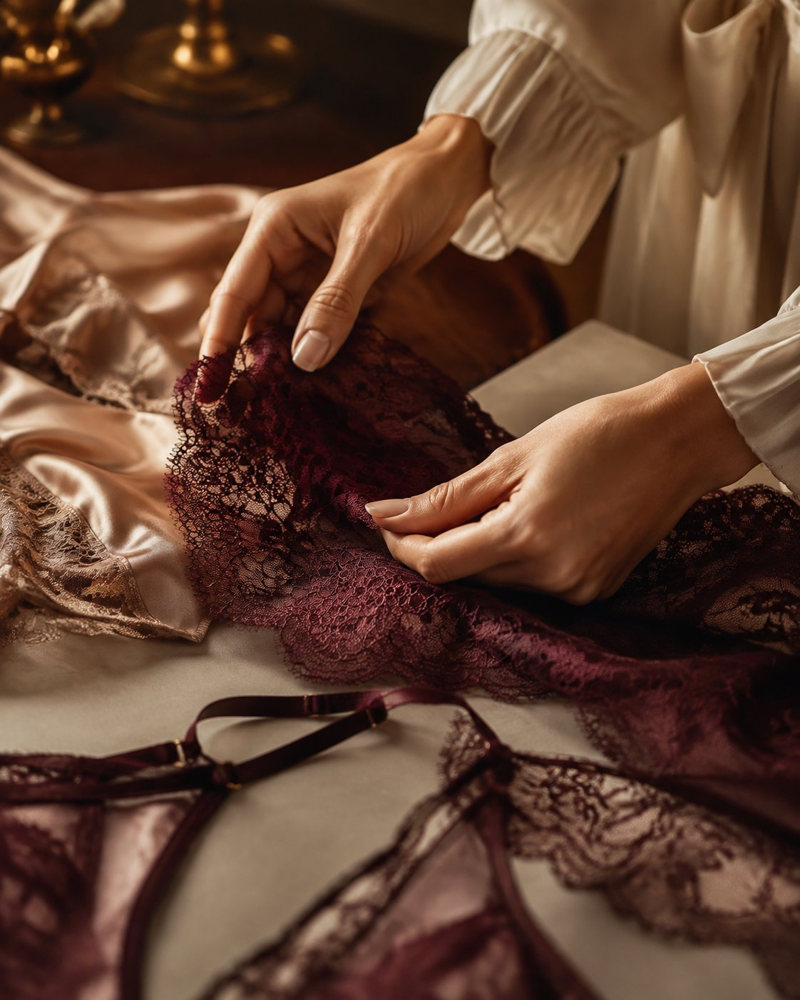

Vestir é uma
forma de dizer.

UZZELETI
UZZELETI — A realização de um sonho.
A UZZELETI Moda Íntima nasceu de um sonho, de um projeto guardado com carinho no coração e que hoje ganha vida.
Mais que uma marca de lingerie, a UZZELETI é a representação de quem eu sou e de quem eu acredito que toda mulher pode ser.
O nome carrega minha história:
UZZE vem de ousada. Da mulher ousada, que tem força de vontade, coragem e garra para ousar. Que não tem medo de ser quem é. Que acorda todos os dias decidida a conquistar seu espaço.
LETI vem de Letícia. Do meu nome, da minha essência, da minha assinatura em cada peça escolhida a dedo.
A junção dos dois deu vida à UZZELETI.
E a nossa borboleta? Ela não está ali por acaso. Ela é o símbolo da transformação. Da mulher que se permite mudar, florescer e se redescobrir. Assim como eu, que transformei um sonho em projeto, e um projeto em realidade.
UZZELETI é feita para a mulher que se ama, que se cuida e que entende que sensualidade é se sentir bem na própria pele.
Seja bem-vinda à UZZELETI.